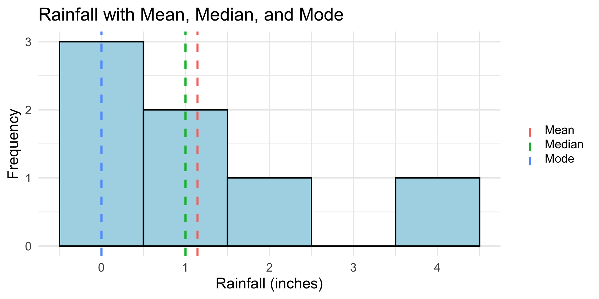
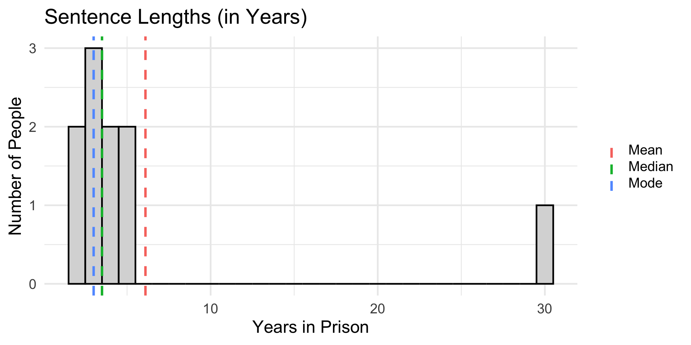
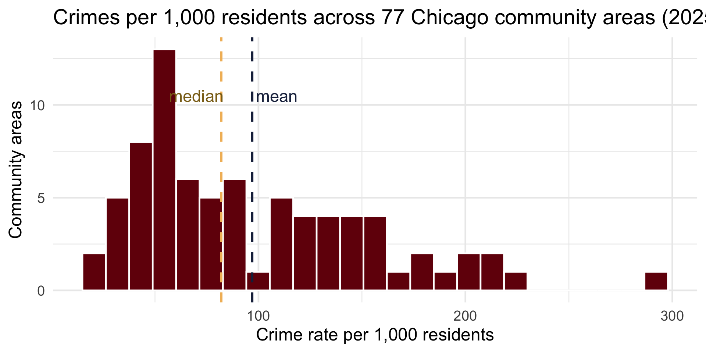
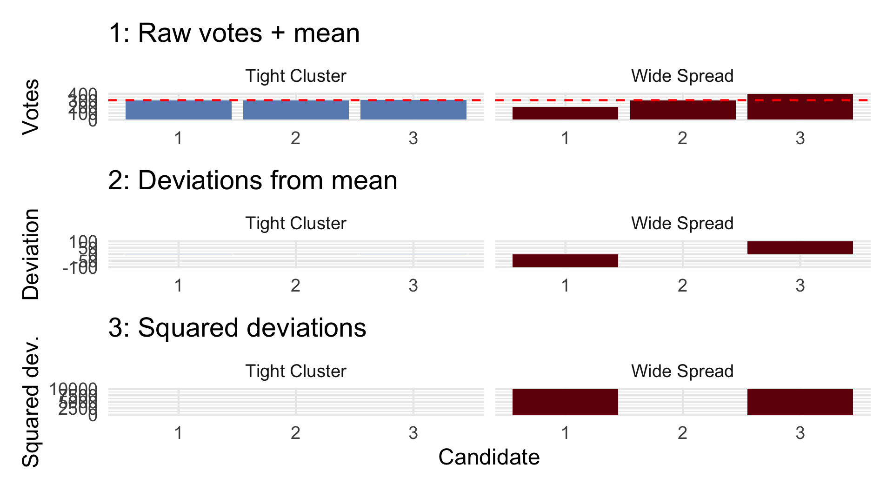
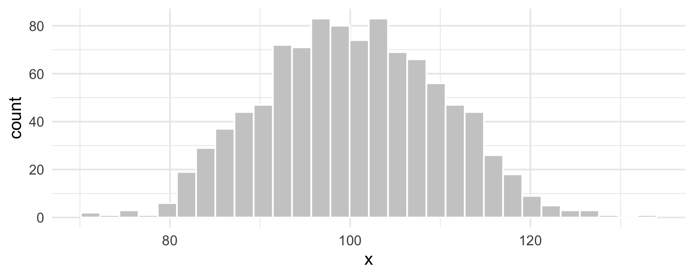
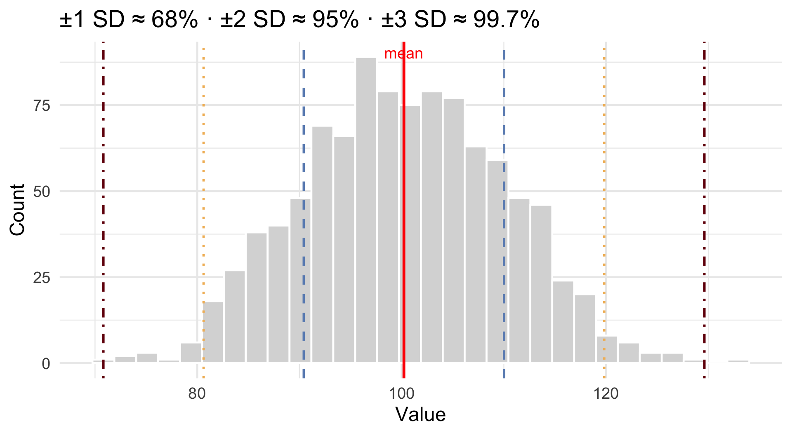
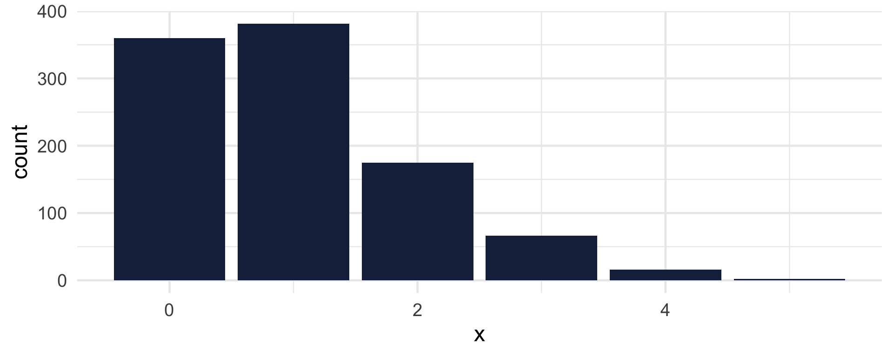
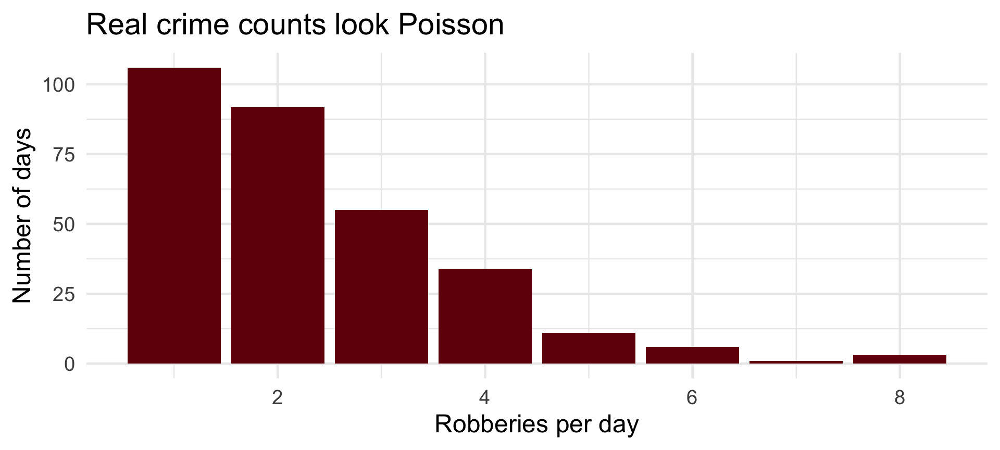

[1] 1.142857CRJU 705 · Session 2 · Fall 2026
swirl assignments — experiences, issues, good stuff with R???
Topic: Descriptive statistics and statistical vocabulary
Learning goals: define in your own words — mean, median, mode, variance, standard deviation, histogram, normal distribution, Poisson distribution — and use R to describe a small dataset and plot a distribution.
R4DS thread: you read Ch. 1 (Data visualization) & Ch. 2 (Workflow) — today’s lab puts both to work.
| Measure | Meaning |
|---|---|
| Mean | the average |
| Median | the halfway point |
| Mode | the most frequently occurring value |
Measures of central tendency summarize a vector of data by locating the typical, the middle, or the most common point.
[1] 1.142857stats <- tibble(
measure = c("Mean", "Median", "Mode"),
value = c(mean(rainfall), median(rainfall), mfv(rainfall))
)
ggplot(tibble(rainfall), aes(rainfall)) +
geom_histogram(binwidth = 1, fill = "lightblue", color = "black") +
geom_vline(data = stats, aes(xintercept = value, color = measure),
linewidth = 1.2, linetype = "dashed") +
labs(title = "Rainfall with Mean, Median, and Mode",
x = "Rainfall (inches)", y = "Frequency", color = NULL)
[1] 6.1[1] 3.5[1] 3One 30-year sentence drags the mean to 6.1 — nobody in the data actually got a “typical” 6-year sentence.

Community-level crime rates in Chicago, 2025:
# A tibble: 3 × 2
community crime_rate
<chr> <dbl>
1 Fuller Park 292.
2 West Garfield Park 220.
3 Englewood 214.The Loop’s rate (driven by a small residential population and huge daytime crowds) pulls the mean above the median — same lesson as the 30-year sentence, in live data.

Three people run for city council; only the top two vote-getters win:
Scenario 1
Scenario 2
In both cases the average is 300. But scenario 1 has much greater spread in support; scenario 2 is tightly clustered — it’s hard to say who’s truly “preferred.”
→ We need measures of dispersion: range, deviations, variance, standard deviation.
[1] 300[1] 300Squaring makes every deviation positive (and emphasizes big misses):
[1] 6666.667[1] 81.64966
The standard deviation measures how spread out the data are around the mean.
“On average, how far is each value from the mean?”
We square the deviations (to make them positive and emphasize larger differences), average them (that’s the variance), then take the square root (back to the original units).
Response times for patrol officers:
Sentence lengths for the same crime:
# A tibble: 1 × 4
mean_violent sd_violent min_violent max_violent
<dbl> <dbl> <dbl> <dbl>
1 30.7 22.5 4 111.The SD is nearly as large as the mean — Chicago communities differ enormously in violence exposure. That inequality is a finding, and it took exactly one line of dispersion statistics to see it.
A distribution shows how many observations fall at different values — the shape of the data.
It answers:
We visualize distributions with a histogram.

Symmetrical, bell-shaped; defined by two numbers — the mean (center) and SD (spread). Try different values!


Often skewed, especially when λ is low. Models counts of rare events: 911 calls per hour, crimes per day, cars per minute. One parameter: λ = expected number of events. Try different values!
Daily robbery counts in our Chicago sample, all of 2025:

CRJU 705 · Session 2